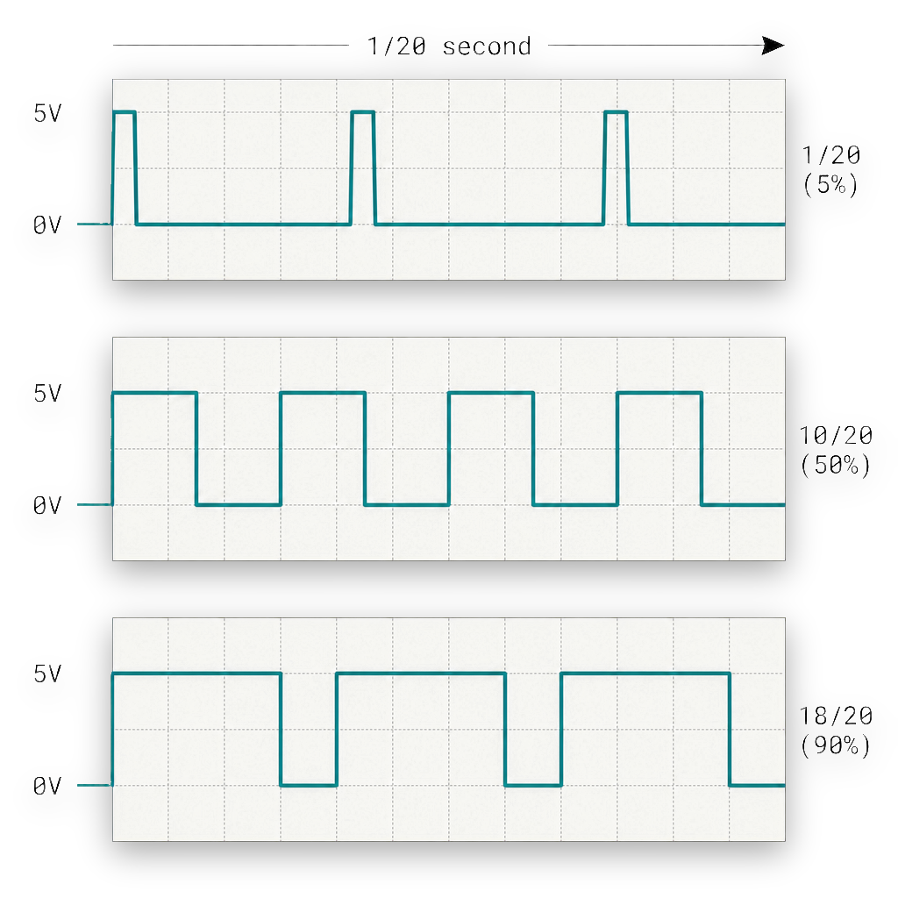
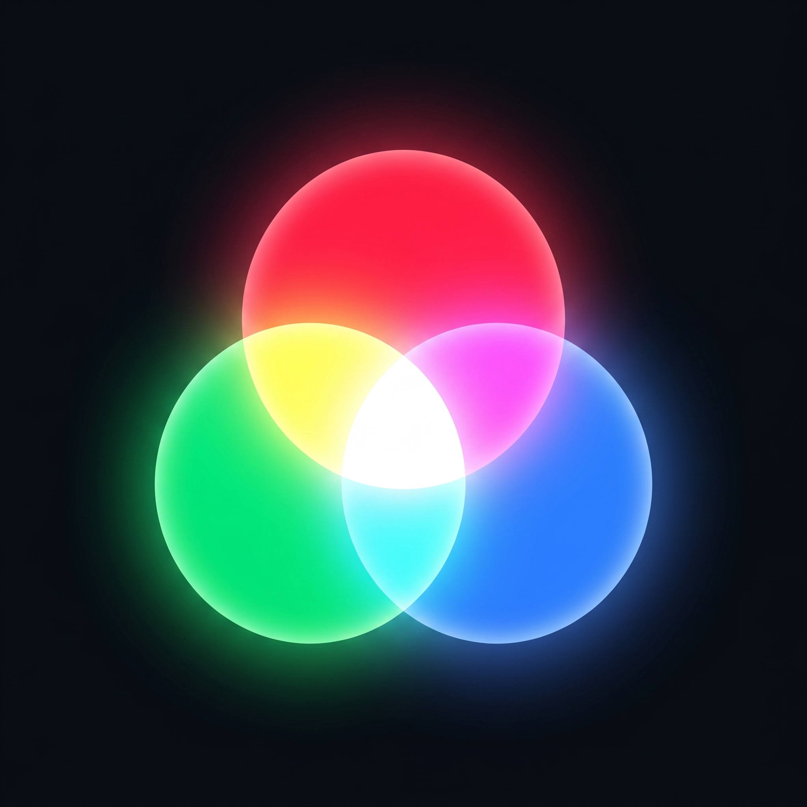
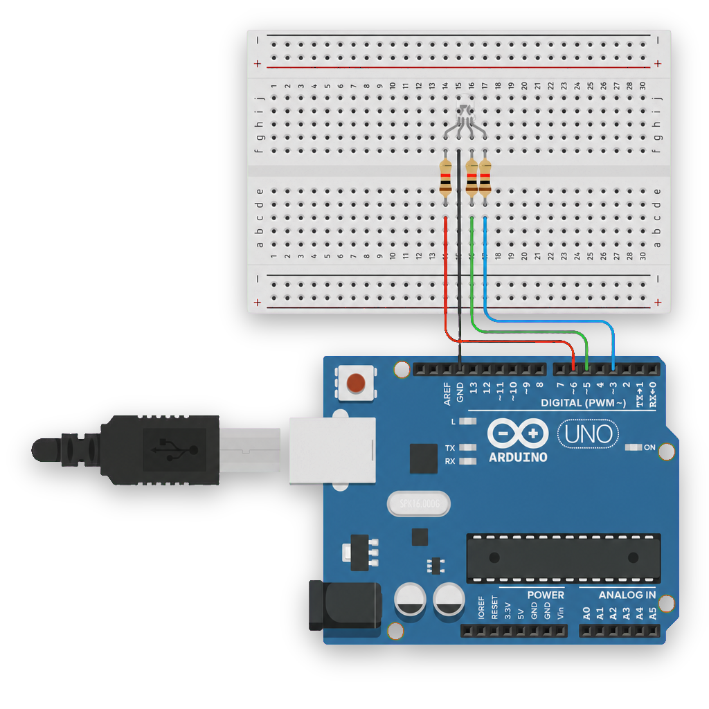

PWM & RGB
Från HIGH/LOW till mjuka övergångar. analogWrite, duty cycle
och RGB-färgblandning — alla färger av bara tre.
Vad du lärde dig
Träff 2 i konkreta byggstenar:
analogWrite — talen mellan HIGH och LOW
0–255 styr en pinne istället för bara av/på. Endast PWM-pinnarna (~ markerade: 3, 5, 6, 9, 10, 11).
for-loop som räknar 0–255 + en delay — och en LED som tonas in mjukt istället för att klicka av/på.
Vad är PWM?
Pulse Width Modulation — pinnen är fortfarande bara HIGH eller LOW, men Arduinon blinkar den så snabbt att ögat ser ett medelvärde.
analogWrite(pin, 128) betyder "vara HIGH halva tiden, LOW andra halvan" — och LED:en ser ut att lysa halvt.



Fade — mjuk övergång
Det första steget bortom HIGH/LOW: en for-loop som räknar upp värdet på pinnen
en grad i taget. Resultat: LED:en tonas in och ut istället för att klicka.
const int ledPin = 6;
void setup() {
pinMode(ledPin, OUTPUT);
}
void loop() {
// Fade upp: 0 → 255
for (int v = 0; v <= 255; v++) {
analogWrite(ledPin, v);
delay(5);
}
// Fade ner: 255 → 0
for (int v = 255; v >= 0; v--) {
analogWrite(ledPin, v);
delay(5);
}
}
~) på Arduino-kortet stödjer analogWrite: 3, 5, 6, 9, 10 och 11. Skickar du analogWrite på pin 7 så får du bara HIGH (≥128) eller LOW (<128).
RGB — alla färger av tre
Tre LED:er i samma paket: röd, grön och blå. Varje styrs av sin egen PWM-pin. Med 256 nivåer per kanal får du 256³ ≈ 16,7 miljoner kombinationer.
const int ledR = 6;
const int ledG = 5;
const int ledB = 3;
void setup() {
pinMode(ledR, OUTPUT);
pinMode(ledG, OUTPUT);
pinMode(ledB, OUTPUT);
}
void loop() {
// Lila: röd + blå
analogWrite(ledR, 200);
analogWrite(ledG, 0);
analogWrite(ledB, 200);
delay(1000);
// Gult: röd + grön
analogWrite(ledR, 255);
analogWrite(ledG, 180);
analogWrite(ledB, 0);
delay(1000);
// Cyan: grön + blå
analogWrite(ledR, 0);
analogWrite(ledG, 200);
analogWrite(ledB, 200);
delay(1000);
}